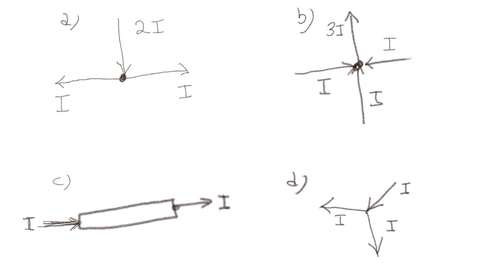
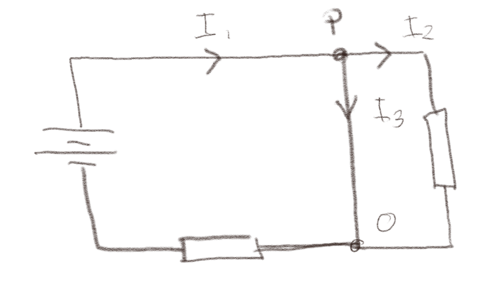
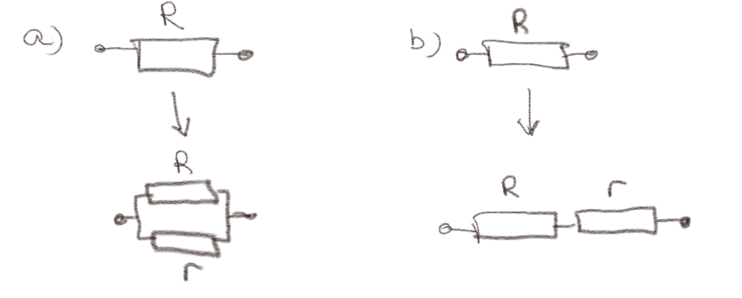
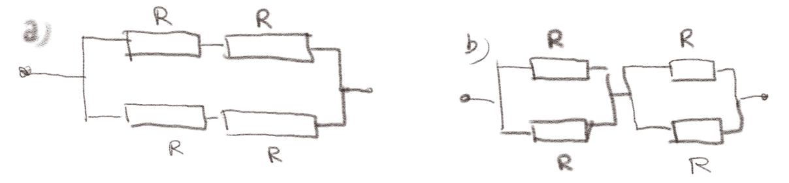

(Lærebok 8.6)
Figuren under viser fire mulige systemer hvor strømmer kommer inn og går ut av et punkt. Retningen på pilen angir positiv retning for strømmene. Hvilke figurer tilfredsstiller Kirchoffs strømlov?

a) Figur (a)
Ja
Kirchoffs strømlov krever at \( \sum_i I_i = 0 \) for ethvert punkt. Vi ønsker å summere strømmene ut av punktet. Det blir $$ \begin{equation} \sum_i I_i = I + I - 2I = 0 \tag{9} \end{equation} $$ Merk at \( I \)-ene er positive siden disse strømmer ut av punktet, mens \( 2I \) er negativ fordi denne strømmer går inn mot punktet. Denne situasjonen tilfredsstiller Kirchoffs lov.
b) Figur (b)
Ja
Summen av strømmer ut av punktet et $$ \begin{equation} \sum_i I_i = 3 I - I - I - I = 0 \label{} \end{equation} $$ som tilfredsstiller Kirchoffs strømlov.
c) Figur (c)
Ja
Hmmm. Her går strømmene ikke inn i et punkt, men inn i et område. Men for en stasjonær situasjon vil vi likevel forvente at \( \oint_S \vec{J} \cdot \d \vec{S} \) og det betyr at strømmene ut av et område også må være null, ikke bare ut av et punkt. Vi ser at $$ \begin{equation} \sum_i I_i = I - I = 0 \tag{10} \end{equation} $$ som tilfredsstiller Kirchoffs strømlov.
d) Figur (d)
Nei
I dette tilfellet er strømmen ut av punktet: $$ \begin{equation} \sum_i I_i = I + I - I = I \tag{11} \end{equation} $$ som ikke tilfredsstiller Kirchoffs strømlov.
Figuren under viser en krets som består av en ledning (tynn linje), to mostander (rektangler) og et batteri.

a) Skriv ned Kirchoffs strømlov for punktet \( P \).
\( I_2 + I_3 - I_1 = 0 \)
Kirchoffs strømlov sier at summen av alle strømmene ut fra punktet \( P \) må være null. Her strømmer \( I_1 \) inn mot punktet og \( I_2 \) og \( I_3 \) ut av punktet slik at $$ \begin{equation} \sum_j I_j = I_2 + I_3 - I_1 = 0 \tag{12} \end{equation} $$
b) Skriv ned Kirchoffs strømlov for punktet \( O \).
\( I_1 - I_2 - I_3 = 0 \)
Kirchoffs strømlov sier at summen av alle strømmene ut fra punktet \( O \) må være null. Her strømmer \( I_1 \) ut av punktet og \( I_2 \) og \( I_3 \) inn mot punktet slik at $$ \begin{equation} \sum_j I_j = I_1 - I_2 - I_3 = 0 \tag{13} \end{equation} $$
c) Hvis du måler strømmen og finner ut at \( I_2 \) er negativ, hvordan vil det edre Kirchoffs strømlov i punktene \( P \) og \( O \).
Vil ikke endre Kirchoffs strømlov.
Det eneste som skjer om vi finner ut at \( I_2 \) er negativ er at når vi setter inn tallene for \( I_1 \), \( I_2 \) og \( I_3 \) så vil \( I_2 \) være et negativt tall. Selve formuleringer av Kirchoffs strømlov vil ikke endre seg. Kirchoffs strømlov er kun avhengig av hvilken vei vi regner som positiv for strømmen, ikke hvilket fortegn verdien for strømmen har.
(Lærebok 8.6.1)
Figuren under viser hvordan vi kan koble en motstand \( r \) til en motstand \( R \), hvor \( r < R \).

a) Blir den totale motstanden mindre eller større hvis \( r \) kobles i parallel med \( R \) som vist i figur (a)?
Mindre.
Den totale motstanden blir $$ \begin{equation} R_T = \frac{1}{\frac{1}{R} + \frac{1}{r}} = \frac{Rr}{R+r} = \frac{R}{1+\frac{R}{r}} \tag{14} \end{equation} $$ som vi ser blir mindre enn \( R \) så lenge \( r > 0 \).
b) Blir den totale motstanden mindre eller større hvis \( r \) kobles i serie med \( R \) som vist i figur (b)?
Større.
Den totale motstanden blir $$ \begin{equation} R_T = R + r > R \; , \tag{15} \end{equation} $$ som er større enn \( R \) så lenge \( r > 0 \).
Figuren under viser en to sammenkoblinger av identiske motstander \( R \)

a) Hvilket sammenkobling har størst motstand?
Vi finner den totale motstanden til hver av systemene. For system (a) blir motstanden til toppen og bunnen \( 2R \) hver. Disse er koblet i parallel, slik at den totale motstanden blir $$ \begin{equation} \frac{1}{R_T} = \frac{1}{2R}+ \frac{1}{2R} = \frac{1}{R} \tag{16} \end{equation} $$ slik at \( R_{T,a} = R \). For system (b) blir motstanden til den venstre parallel-koblingen 1/(1/R + 1/R) = 1/(2/R) = R/2$. Den vi kobler sammen to slike mostanden i serie. Da blir den totale motstanden $$ \begin{equation} R_T = \frac{R}{2} + \frac{R}{2} = R \tag{17} \end{equation} $$ Vi ser derfor at den totale motstanden blir den samme og lik \( R \) i begge tilfeller.
b) Hvis du måler strømmen og finner ut at \( I_2 \) er negativ, hvordan vil det edre Kirchoffs strømlov i punktene \( P \) og \( O \).
Vil ikke endre Kirchoffs strømlov.
Det eneste som skjer om vi finner ut at \( I_2 \) er negativ er at når vi setter inn tallene for \( I_1 \), \( I_2 \) og \( I_3 \) så vil \( I_2 \) være et negativt tall. Selve formuleringer av Kirchoffs strømlov vil ikke endre seg. Kirchoffs strømlov er kun avhengig av hvilken vei vi regner som positiv for strømmen.